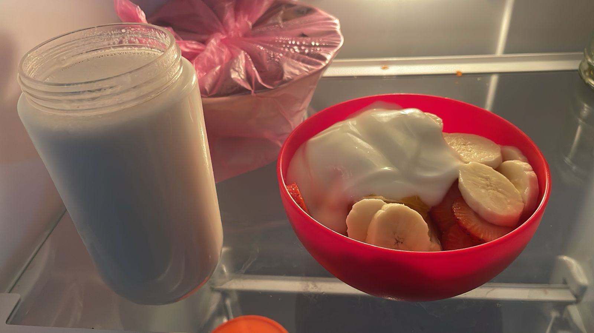

Amor mío: A veces me detengo en mitad del día, en medio de una conversación o cuando regreso a casa, y pienso: qué bonito es tener a alguien como tú. Esta semana no necesitábamos hacer grandes cosas para sentir que estábamos construyendo algo. Bastaba con leer tus mensajes, escuchar tu voz o ver alguna de tus fotos para que mi día se iluminara. Cuando me decías que no dormías bien, yo quería inventar una forma de pasar mis horas de sueño a las tuyas. Cuando te sentías insegura, me daban ganas de envolverte en abrazos, aunque fueran solo escritos. Y cuando simplemente me preguntabas si estaba bien, yo sentía que alguien, por fin, se preocupaba por mí de una forma bonita, sin pedir nada a cambio. Esta semana me descubrí cuidándote con mis palabras. Prestando atención a cómo te sentías. Queriendo ser suave, paciente, presente… como tú mereces. Porque he entendido que amar no siempre es decirlo, a veces es estar, preguntar, escuchar, no desaparecer. Y si algo me queda claro es que contigo, hasta mis silencios tienen lugar. Tú sabes leerme, incluso cuando no digo mucho. En esta semana, la relación se centró en construir un refugio de paz y comprensión mutua. Hablamos de temas más serios, pero lo hicimos con una calma que reflejaba la confianza que habíamos construido entre nosotros. Nos cuidamos el uno al otro, no solo con palabras, sino con actos de amor que demostraban la atención genuina. Tu te preocupabas por el bienestar mio, incluso en tus momentos de cansancio, mientras que yo aseguraba que tu te sintieras querida y bienvenida en todo momento. Cada conversación era una oportunidad para hacer del día un lugar seguro donde ambos podíamos ser vulnerables, expresar los miedos y preocupaciones, y recibir consuelo sin juicio. La frase, “Cuando hablo contigo, todo se siente más ligero” refleja este espacio seguro que ambos nos dimos. El amor no siempre tiene que ser grandioso o épico; a veces se encuentra en las conversaciones cotidianas que nos permiten respirar y sentir que, con el otro, todo va a estar bien. Gracias por eso. Por convertirte en mi lugar seguro. No sé si ya lo sabías, pero te lo dejo por escrito: me haces bien. Mucho más de lo que podrías imaginar.
Momentos que derriten:
“Cuando hablo contigo, todo se siente más ligero,”
Momentos que irritan:
No vivir contigo JAJAJA
